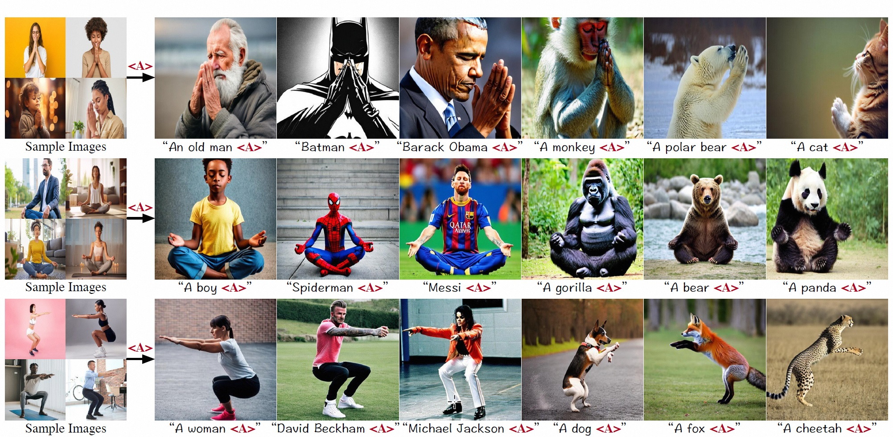
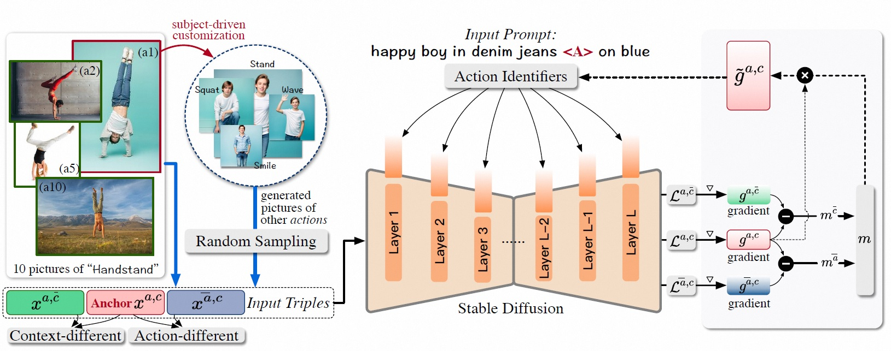

This study focuses on a novel task in text-to-image (T2I) generation, namely action customization. The objective of this task is to learn the co-existing action from limited data and generalize it to unseen humans or even animals. Experimental results show that existing subject-driven customization methods fail to learn the representative characteristics of actions and struggle in decoupling actions from context features, including appearance. To overcome the preference for low-level features and the entanglement of high-level features, we propose an inversion-based method Action-Disentangled Identifier (ADI) to learn action-specific identifiers from the exemplar images. ADI first expands the semantic conditioning space by introducing layer-wise identifier tokens, thereby increasing the representational richness while distributing the inversion across different features. Then, to block the inversion of action-agnostic features, ADI extracts the gradient invariance from the constructed sample triples and masks the updates of irrelevant channels. To comprehensively evaluate the task, we present an ActionBench that includes a variety of actions, each accompanied by meticulously selected samples. Both quantitative and qualitative results show that our ADI outperforms existing baselines in action-customized T2I generation.
By inverting representative action-related features, the learned identifiers "<A>" can be paired with a variety of characters and animals to contribute to the generation of accurate, diverse and high-quality images.
Overview of our ADI method. ADI learns more efficient action identifiers by extending the semantic conditioning space and masking gradient updates to action-agnostic channels.
@article{ADI2024,
title={Learning Disentangled Identifiers for Action-Customized Text-to-Image Generation},
author={Siteng Huang and Biao Gong and Yutong Feng and Xi Chen and Yuqian Fu and Yu Liu and Donglin Wang},
year={2023},
eprint={2311.15841},
archivePrefix={arXiv},
primaryClass={cs.CV}
}